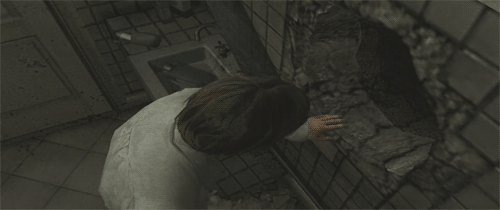
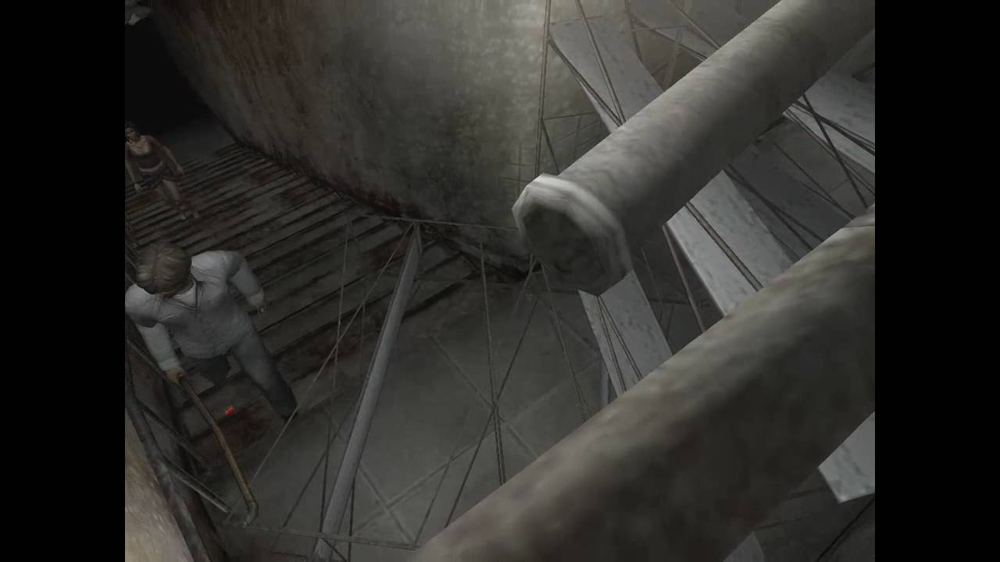
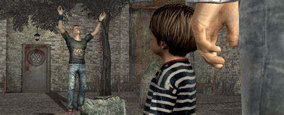
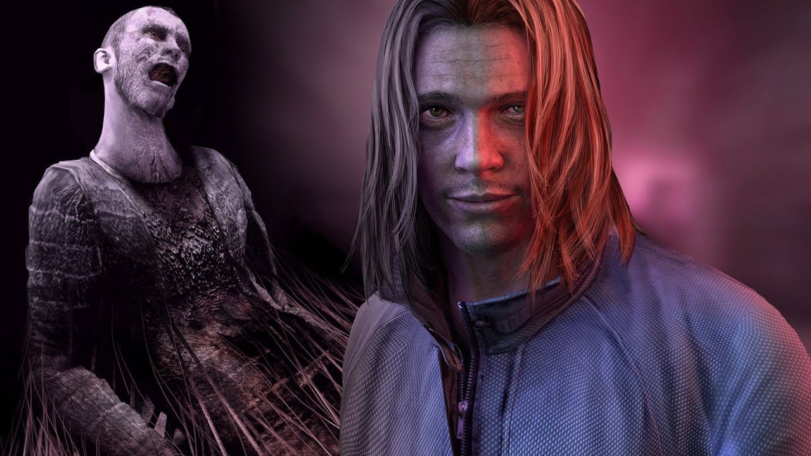

Silent Hill 4: The Room
El juego empieza cuando el protagonista Henry Townshend experimenta una pesadilla en la que su apartamento está cubierto de sangre y óxido, y un espíritu lo ataca en su sala de estar. Henry ha estado encerrado en su apartamento en South Ashfield, el cuarto 302, durante cinco días, sin manera de comunicarse con el exterior y sufriendo pesadillas similares a esa frecuentemente. La puerta está cerrada con candados colocados desde el interior, las ventanas se han vuelto irrompibles y nadie lo puede oír fuera del apartamento. Al inicio del juego, un agujero grande aparece en la pared de su cuarto de baño de forma inexplicable, y Henry entra en él intentando escapar. Desde ese momento entra a una red de agujeros que lo llevan a través de una serie de sueños o «mundos» relacionados con Silent Hill...

El primer destino de Henry es una estación de metro subterránea aparentemente abandonada, donde encuentra a una mujer llamada Cynthia Velázquez, quien está convencida de que está soñando. Henry intenta protegerla y escapar de la estación subterránea, pero al poco tiempo Cynthia se separa de él y Henry es atacado por unas criaturas parecidas a perros. Buscando a Cynthia, el protagonista encuentra otro agujero, y al entrar en él despierta en su apartamento, donde recibe una extraña llamada de ella pidiéndole ayuda. Este hecho hace a Henry dudar de si lo que experimentó fue un sueño o fue real. Al poco tiempo, Cynthia es asesinada por un hombre misterioso. Henry la descubre a punto de morir, con una serie de números grabados en el pecho. Después del asesinato, Henry despierta otra vez en su apartamento y oye en la radio que Cynthia ha muerto en el mundo real.

Lo mismo sucede con las otras tres personas que Henry encuentra cuando se adentra en el agujero. Henry llega a un bosque cerca de un orfanato relacionado con el culto de Silent Hill, donde conoce a Jasper Gein, un muchacho tartamudo que balbucea cosas que, en principio, no tienen sentido. Henry se adentra más hasta toparse con un niño, pero antes de que pueda interrogarlo Jasper interrumpe y el niño se va.
La segunda muerte que Henry presencia es la inmolación de Jasper, quien se graba los 5 números característicos en el estómago mientras arde.

Después de la muerte de Jasper, el agujero lleva a Henry a una extraña prisión para niños, donde el guardia Andrew DeSalvo (curiosamente su apellido es parecido a la protagonista de la película, Rose Da Silva) está en una celda, de la cual Henry lo libera; al parecer este conoce al pequeño niño, y dice que su nombre es Walter Sullivan. Poco después, Henry encuentra a Andrew ahogado en una celda sucia y con agua.
La cuarta víctima es un vecino que vive enfrente de Henry, Richard Braintree, a quien encuentra en un mundo parecido al exterior de su edificio de apartamentos; al final del mundo, Henry encuentra a Richard en una silla eléctrica, con Walter niño señalando un apartamento en la ventana. Los asesinatos se relacionan en el hecho de que los cádaveres de Cynthia, Jasper, Andrew y Richard poseen extraños números en una parte de sus cuerpos, y Henry descubre que ese es el MO del asesino en serie Walter Sullivan.

En su apartamento, Henry descubre una pequeña grieta que le permite espiar a su vecina, Eileen Galvin. Ella parece estar preocupada por Henry aunque no lo conoce muy bien. Junto con el superintendente del edificio, Frank Sunderland, Eileen trata de contactar con el protagonista, pero no lo puede oír ni percibir de ninguna manera. Sunderland menciona que no es la primera vez que algo así sucede en el apartamento de Henry. El protagonista también empieza a recibir notas por debajo de la puerta, las cuales son fragmentos del diario del dueño anterior del apartamento, Joseph Schreiber, quien estaba investigando los asesinatos de Sullivan.
El último lugar al cual el agujero del cuarto de baño conduce a Henry es una versión cubierta de sangre y óxido del interior de su edificio de apartamentos, donde halla a un hombre hablando de forma extraña y tratando de entrar en la habitación de Eileen. Cuando Henry logra entrar al apartamento de su vecina la encuentra junto al misterioso niño, fuertemente golpeada y con números grabados en la espalda. Eileen agradece al niño y le dice que debe huir, mientras Henry se inclina ante ella y despierta.
La empresa "Konami"
Konami Holdings Corporation (コナミホールディングス株式会社 Konami Hōrudingusu Kabushiki-gaisha?), o simplemente Konami, es una empresa de desarrollo de juguetes, cartas coleccionables, anime, tokusatsu, máquinas tragaperras y videojuegos. Fue fundada en 1969 como un negocio de reparación y de jukeboxes en Osaka, Japón, por Kagemasa Kozuki, quien es todavía su presidente y director ejecutivo.
El nombre "Konami" es una conjunción de los nombres Kagemasa Kozuki, Yoshinobu Nakama, Hiro Matsuda, y Shokichi Ishihara, quienes fueron los socios de Kozuki y los fundadores originales de Konami Industry Co., Ltd en 1973. Konami también significa «olas pequeñas». Tiene actualmente sus bases en Tokio y adicionalmente opera clubes de salud y ejercicio en Japón.
Konami ha sido el responsable de la creación de 6 de las franquicias más exitosas en la historia de los videojuegos: Castlevania, Contra, Metal Gear Solid, Silent Hill, Dance Dance Revolution (que fue el parte aguas para la creación de este tipo de juegos como Pump It Up de Andamiro) y Pro Evolution Soccer (desde su primer videojuego, International Superstar Soccer), así como ser la creadora de videojuegos exitosos, basados en series, caricaturas y películas, tales son los casos de los videojuegos de las caricaturas Tiny Toon Adventures, Animaniacs y Tortugas Ninja, así como el videojuego Batman Returns, basado en la película homónima, y haber desarrollado el considerado mejor videojuego de arcade de todos los tiempos: The Simpsons Arcade Game. Aunado a eso, también ha sido la creadora de la franquicia de cartas coleccionable de Yu-Gi-Oh!, basados en el popular ánime japonés, logrando un gran éxito (y ser la única que le pudo hacer frente al éxito del también juego de cartas Magic: El encuentro).
Pagina oficial de Konami(Games)